-
Corte de Espinhos e Rosas
● Corte de espinhos e rosas é um livro de fantasia de tirar o fôlego. Memorável em todos os aspectos, com personagens complexos, enredo rico e um magnífico mundo de fantasia combinados impecavelmente para criar um romance épico.
● Num mundo dividido uma muralha mágica separa duas espécies. De um lado, os feéricos vivem dentro de suas fronteiras cheias de beleza e mistério; do outro, os humanos possuem apenas medo, desconfiança e dificuldades. Feyre, filha de um casal de mercadores humanos e falidos, se torna caçadora para sustentar a família. Dura como as flechas que carrega, letal como sua pontaria, ela abandona as fantasias de garota e as troca pela árdua vida nas florestas ao redor de sua aldeia.
● Sua única alegria é observar as cores e sonhar em capturá-las. Mas, na floresta, coberta de neve tudo é branco e árido; como o ódio pelos feéricos que carrega no coração; Como as telas que não pode comprar ou colorir. Até que um enorme lobo cruza seu caminho... Sem hesitar, Feyre dispara... uma flecha. Um ato de rebelião.
● Após matar o lobo, uma criatura bestial surge exigindo uma reparação. Arrastada para além do muro, para uma terra mágica e traiçoeira - que ela só conhece por meio de lendas -, a jovem descobre que seu captor não é um animal, mas Tamlin, Grão Senhor da Terra Primaveril. Um feérico com um segredo, escondido sob uma máscara. Ela descobre ainda que o então animal que havia assassinado era, na verdade, uma criatura mágica, uma fada zoomórfica transformada em lobo.
● À medida que ela descobre mais sobre este mundo onde a magia impera, seus sentimentos por Tamlin passam da mais pura hostilidade até uma paixão avassaladora. Enquanto isso, uma sinistra e antiga sombra avança sobre o mundo das fadas e Feyre deve provar seu amor para detê-la ou Tamlin e seu povo estarão condenados.
● Ao descobrir a maldição que condena o mundo féerico Feyre passa por diversos desafios, testes, tudo por amor. Será que ela conseguirá salvar todas as terras desta maldição e o seu amor?

 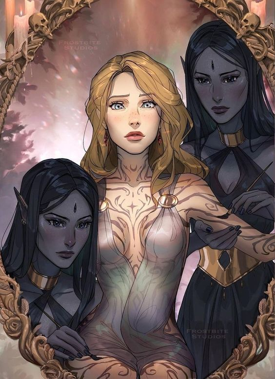
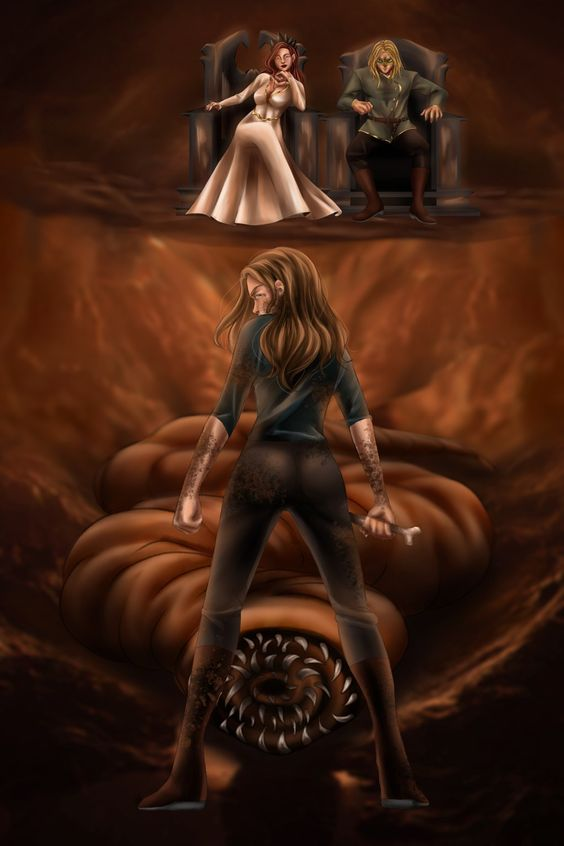
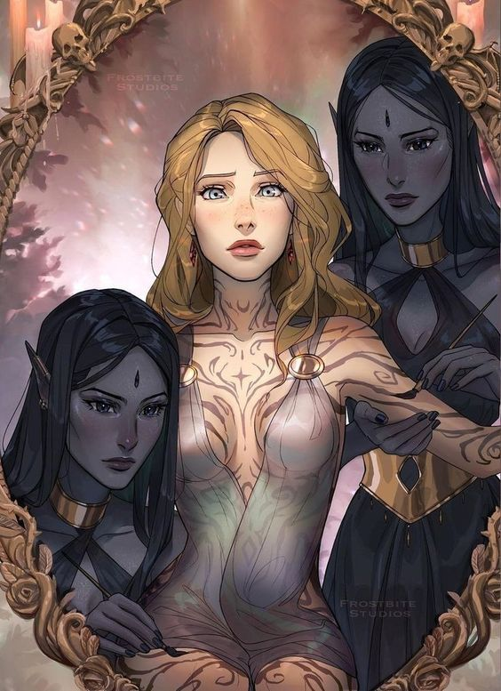
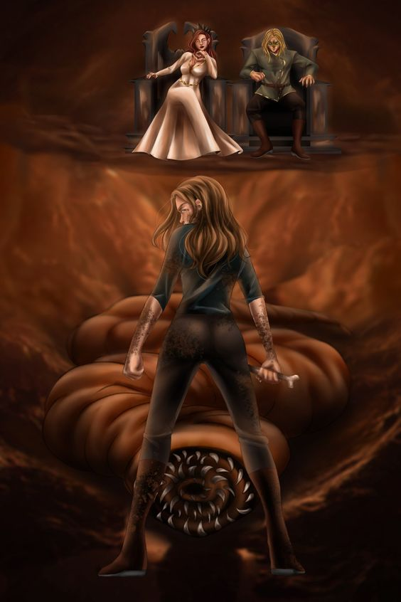
- Corte de Névoa e Fúria
● Por amor ela enganou a morte. Por liberdade, ela se tornará uma arma. Corte de névoa e fúria é o esperado segundo volume da saga iniciada em Corte de espinhos e rosas.
● Neste livro, seguimos a saga de Feyre Archeron, que morreu Sob a Montanha. Nas garras de Amarantha, a jovem humana que ansiava por amor e proteção deixou de existir. Das cinzas de seu velho eu, Feyre Quebradora da Maldição foi Feita - com poderes de sete Grão-Feéricos... e uma vontade tão férrea quanto o metal temido por eles.
● Seu coração no entanto, permanece humano, vulnerável. Incapaz de esquecer o que sofreu para libertar o povo de Tamlin... e o pacto firmado com Rhysand, senhor da Corte Noturna. Mas mesmo assim, Feyre se esforça para reconstruir o lar que criou na Corte Primaveril. Então por que é ao lado de Rhys que ela se sente mais plena?
● Peça-chave num jogo que desconhece. Feyre deve aprender rapidamente do que á capaz. E curar sua alma partida. Pois um antigo mal, muito pior que Amarantha, se agita no horizonte... um que ameaça não apenas os feéricos, mas o mundo humano e a muralha também. Enquanto navega por uma teia de intrigas políticas, paixões e poder, sufocada por Tamlin, Feyre precisa decidir o que deseja: amor ou liberdade?
● Feyre aprende como se tornar uma verdadeira guerreira usando as ferramentas que possui. Um novo elenco de personagens dá vida ao reino. Cassian e Azriel - os irmãos de armas de Rhys, o sempre poderoso e charmoso Morrigan e o mortal, sarcástico, Amren. Sarah J. Maas desenvolve a narrativa com tramas tão hábeis que nenhum leitor pode começar este livro sem tentar terminá-lo o mais rápido possível. É cativante, romântico, cheio de ação e um estudo intenso dos reinos em guerra. Um verdadeiro clássico no gênero fantasia.
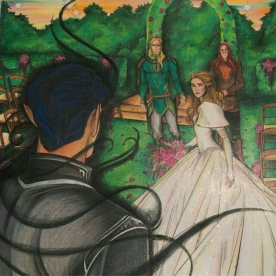 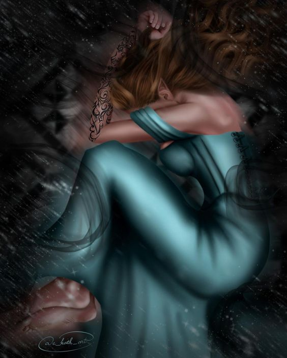 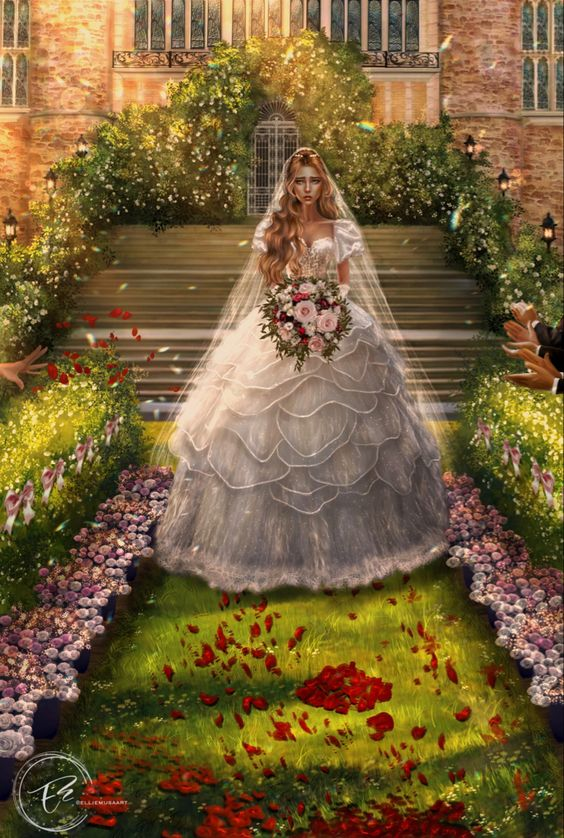 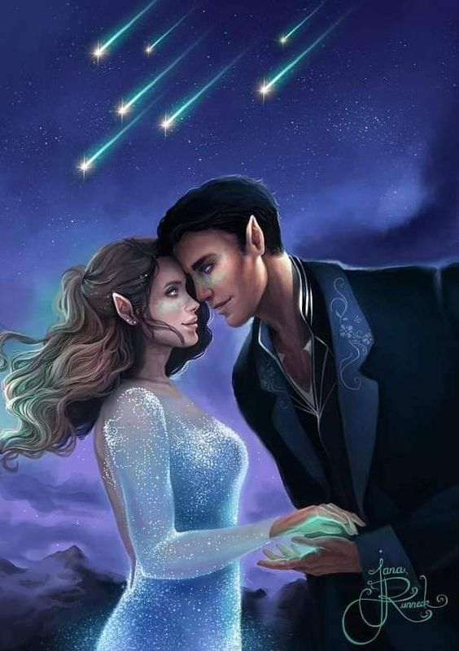 -
Corte de Asas e Ruína
● Em meio a guerra, é seu coração que enfrentará a mais árdua das batalhas... Corte de asas e ruína é o eletrizante terceiro volume da série best-seller iniciada em Corte de Espinhos e Rosas. Sarah J.
● Seguindo os acontecimentos do volume anterior, Corte de névoa e fúria, acompanhamos a saga de Feyre Archeon, que suportou a fome, o frio e a desesperança, atravessou a Montanha e foi Sob a Montanha. Reclamou seu amor, quebrou a maldição e livrou o povo feérico da mais terrível ameaça... ou não? Amarantha pode ter sido aniquilada, mas o rei de Hybern pretende usar o Caldeirão para moldar um novo tempo; uma época de trevas e escravidão.
● A guerra se aproxima, um conflito que promete devastar Prythian. Em meio à Corte Primaveril, num perigoso jogo de intrigas e mentiras, a Grã-Senhora da Corte Noturna esconde seu laço de parceria e sua verdadeira lealdade. Longe de sua corte, longe de seu Grão-Senhor e verdadeiro amor, ela reúne informações, na esperança de vencer Hybern.
● Tamlin está fazendo acordos com o invasor, Jurian recuperou suas forças e as rainhas humanas prometem se alinhar aos desejos de Hybern em troca de imortalidade. O exército inimigo parece imbatível. Mas o sonho de Velaris é como um farol em meio às trevas. O ideal de um mundo mais justo
● Enquanto isso Feyre e seus amigos precisam aprender em quais Grãos-Senhores confiar, e procurar aliados nos mais improváveis lugares. Porém, a Quebradora da Maldição ainda tem uma ou duas cartas na manga antes que sua ilha queime.
● Sarah J. Maas faz questão de salientar neste livro que Rhysand e Feyre são iguais. A protagonista não é retratada como uma donzela fraca em perigo, ela realmente é uma guerreira forte e determinada! Os personagens são muito complexos, todas as perguntas que permeiam a trama serão respondidas. Corte de asas e ruína é um romance épico que preenche todos os requisitos para um livro exemplar, abrindo caminho de forma impecável para o final de uma série inesquecível.
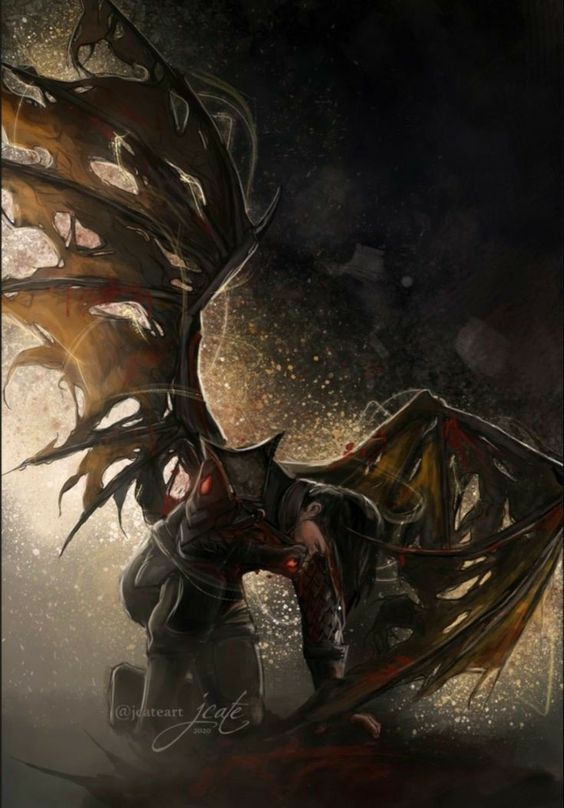 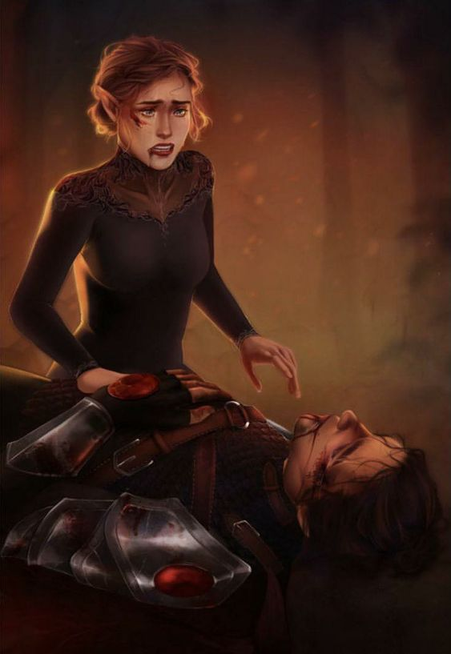 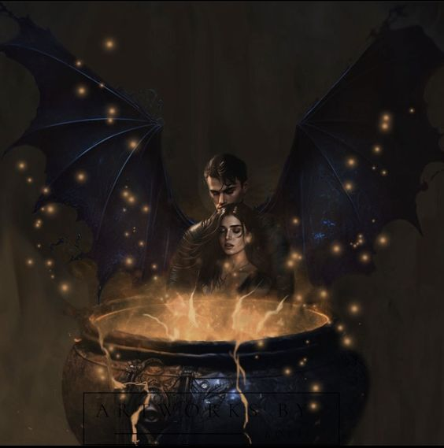 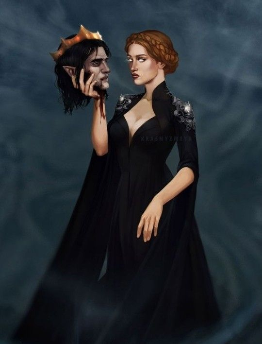 -
Corte de Gelos e Estrelas
● Feyre, Rhys e seu círculo íntimo de amigos ainda estão ocupados reconstruindo a Corte Noturna e tentando manter a paz, conquistada a base de muito esforço e perdas pessoais, após a queda da muralha. Mas o Solstício de Inverno finalmente está próximo e, com isso, um alívio merecido. Compras, festas, celebração e a promessa de dias tranquilos. A atmosfera festiva não consegue, entretanto, impedir que as sombras da guerra se aproximem. Em seu primeiro Solstício como Grã-Senhora, Feyre ainda lida com os horrores do passado recente e percebe que seu parceiro e sua família têm mais cicatrizes do que ela esperava – cicatrizes que podem impactar o futuro, e a paz, de sua Corte.
● Para Feyre Archeon, ser Grã-Senhora ainda é uma novidade, e ela precisa descobrir seu papel enquanto luta para reconstruir uma Velaris devastada pela guerra contra Hybern. A muralha que separava o mundo feérico do mundo humano se foi, Keir está prestes a deixar a Corte dos Pesadelos para uma visita à cidade de Luz Estelar e os illyrianos parecem insatisfeitos com o resultado da guerra.
● Divididos entre as tentativas de retomar suas vidas após a grande batalha, as responsabilidades de liderar a Corte Noturna e a preparação para o rigoroso inverno, o trabalho de Feyre, Rhys e seu Círculo Íntimo parece nunca ter fim. Todos seguem tentando manter a paz, conquistada a base de muito esforço e perdas pessoais, após a queda da muralha. Mas com o Solstício de Inverno finalmente se aproximando, chega também a promessa de descanso conquistado com muito esforço.
● No entanto, nem as festividades conseguem impedir que as sombras da guerra se aproximem. Enquanto vive primeiro Solstício como Grã-Senhora, Feyre ainda lida com os horrores do passado recente e percebe que seu parceiro e sua família têm mais cicatrizes do que ela esperava - cicatrizes que podem impactar o futuro, e a paz, de sua Corte.
● Corte de gelo e estrelas é derivado do universo de Corte de Espinhos e Rosas, e tem como foco principal os seus personagens, proporcionando aos fãs da série, uma visão geral do universo após o final da primeira trilogia. Contado a partir de perspectivas alternadas, a narrativa permite que o leitor reencontre Feyre, Rhysand, Cassian, More, Elain, Nesta, Azriel e Amren, enquanto tentam encontrar o caminho para o novo mundo pós-guerra.
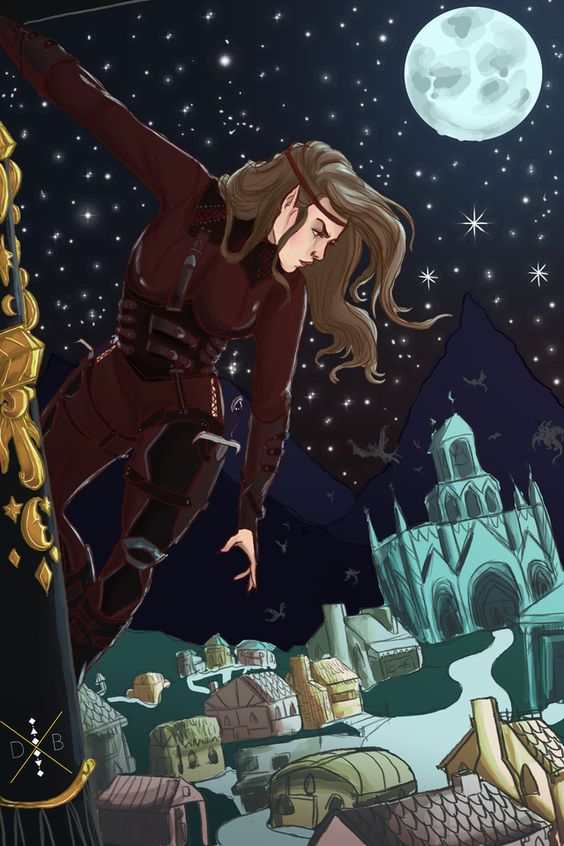 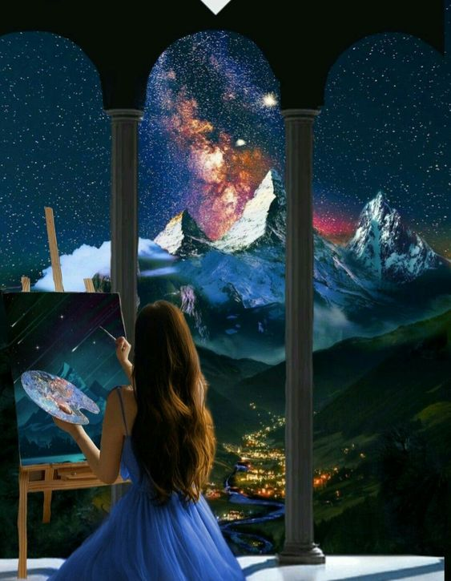 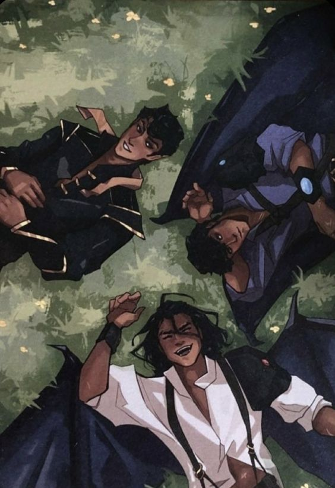 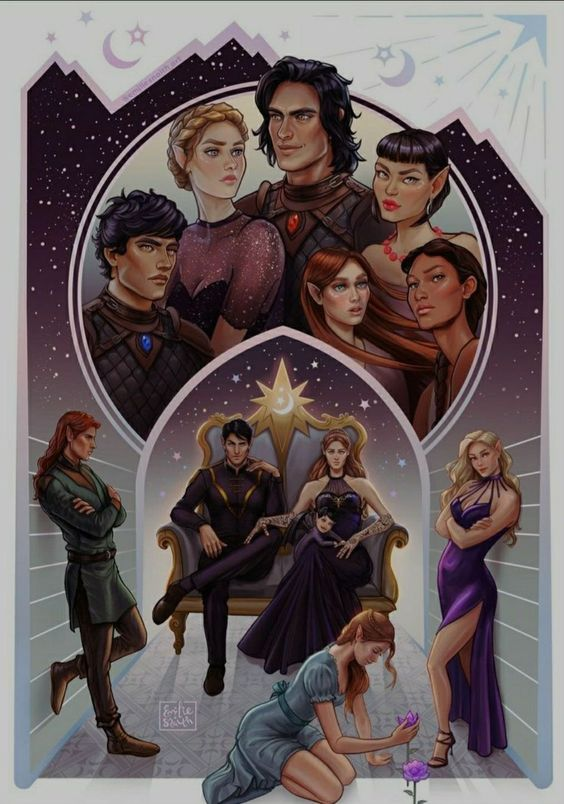 -
Corte de Chamas Prateadas
● A guerra finalmente chegou ao fim, e a irmã de Feyre, Nestha, brilha em Corte de chamas prateadas, a sedutora e poderosa sequência da aclamada série Corte de espinhos e rosas. A 1ª edição inclui dois contos extras, um da Feyre e um do Azriel. Um conteúdo inédito e exclusivo da edição brasileira do livro para os fãs da série. Nestha Archeron sempre foi orgulhosa, irritável e lenta em perdoar.
● Ter sido Feita pelo Caldeirão não tornou sua personalidade mais doce. Mas o que poucos sabem é que, por trás da fachada de força, Nestha carrega uma dor que a está corroendo: o arrependimento por não ter feito nada para ajudar a família quando caíram na pobreza e por não ter sido capaz de salvar o pai...Desde que foi forçada a entrar no Caldeirão e se tornar Grã-Feérica contra sua vontade, ela lutou para encontrar um lugar para si mesma dentro do mundo estranho e mortal que habita.
● No entanto, ela não consegue superar os horrores da guerra com Hybern e tudo o que perdeu nela.A única pessoa que a incendeia, mais do que qualquer outra, é Cassian, o guerreiro com cicatrizes de batalha cuja posição na Corte Noturna de Rhysand e Feyre o mantém constantemente na órbita de Nestha. Mas seu temperamento não é a única coisa que Cassian inflama. O fogo entre eles é inegável, e fica ainda mais quente quando são forçados a ficarem próximos um do outro.
● Como se não bastasse, a possibilidade de uma nova guerra desponta no horizonte e, enquanto isso, as traiçoeiras rainhas humanas que retornaram ao continente durante a última guerra forjaram uma perigosa nova aliança, ameaçando a frágil paz que se instalou nos reinos... E a chave para detê-los pode depender de Cassian e Nestha enfrentarem seu passado assustador.Contra o pano de fundo arrebatador de um mundo devastado pela guerra e atormentado pela incerteza, Nestha e Cassian percebem que apenas juntos podem triunfar, e lutam contra monstros por dentro e por fora enquanto buscam aceitação – e cura – nos braços um do outro.
● É um livro sobre redenção, sobre contar a importância de contar a própria história e sobre o que nos leva a tomar atitudes extremas.
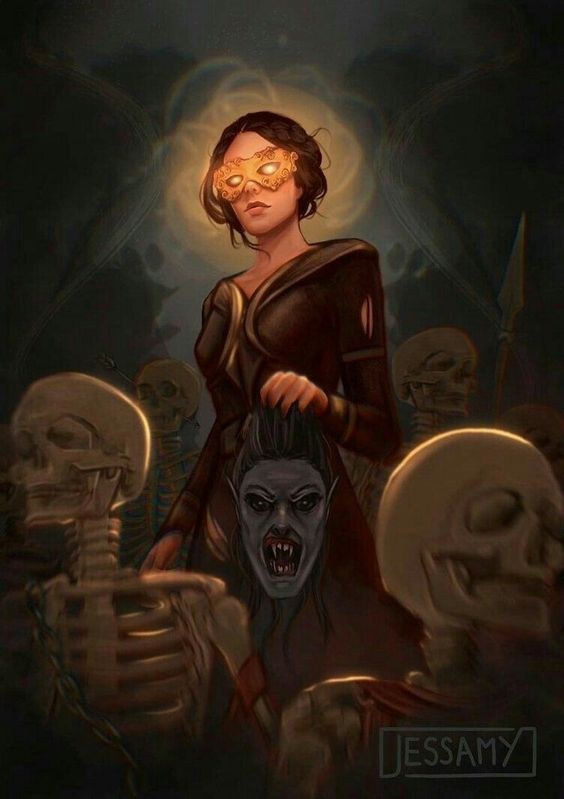 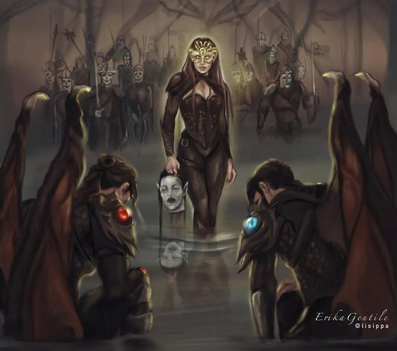 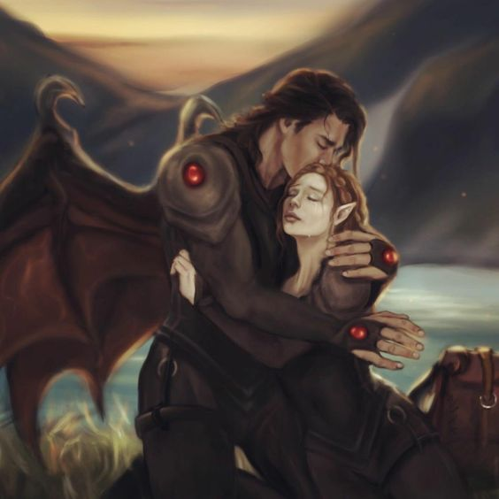 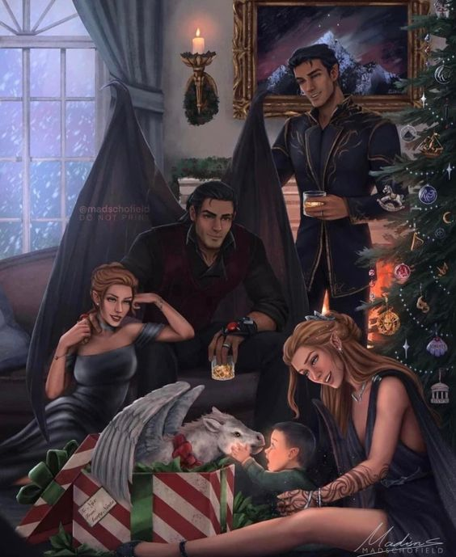